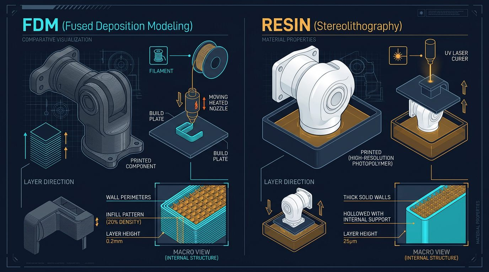

What this guide covers
The short answer: which 3D printer is best?
For most functional robot-arm parts, a reliable FDM printer with a rigid frame, automatic bed leveling, a heated bed and a well-controlled extrusion system is the most versatile choice. FDM printers can produce large links, brackets and covers from PLA, PETG, ABS, ASA, nylon or reinforced filaments, depending on the hotend, enclosure and drying workflow.

A resin printer is better when the priority is fine detail, small scale and surface finish. It can be useful for a miniature gripper, a sensor housing, a mold or a visual prototype. Standard photopolymer resin is often brittle, however, and a detailed resin print should not be assumed to be a safe structural replacement for a properly engineered FDM or machined component.
The best printer is therefore the one that matches the part, material and validation process. Build volume alone is not a meaningful measure of structural capability.
I printed my first shoulder bracket in standard resin because the detail looked great in the slicer preview, and it snapped clean in half the first time I mounted a servo horn and applied normal assembly torque — no load on the arm at all, just tightening a screw. Reprinting the same geometry in PETG on an FDM printer with six perimeters solved it immediately. That one failure is why this guide leans so hard toward FDM for anything that will see mechanical stress.
What robot-arm components demand from a printer
Robot-arm parts experience repeated loads, vibration, impacts and changing directions. A printed shoulder bracket may carry the weight of every downstream link, while a gripper finger may see small but frequent impacts. The printer must provide repeatable dimensions and the material must maintain enough stiffness and toughness in the operating environment.
- Dimensional accuracy: bearing seats, dowel holes and bolt patterns must be measured rather than trusted from the CAD file.
- Layer adhesion: the part can be strong in the XY plane but weak between layers, especially when printed hot or with poor cooling.
- Thermal stability: a part exposed to a warm enclosure, motor or sunlight may creep over time.
- Surface quality: rough bearing seats and warped bases create alignment errors.
- Repeatability: a robot mechanism needs consistent parts, not one successful print followed by variable dimensions.
Do not evaluate a printer using tensile strength alone. A robot link is a shaped beam with stress concentrations, fastener holes, layer anisotropy and dynamic loads. Geometry, print orientation and assembly design often matter more than the material headline value.
FDM 3D printing for robot parts
Why FDM is usually the default
Fused deposition modeling builds a part from thermoplastic filament. It is economical for large components and allows the user to tune walls, infill, layer height, temperature and orientation. A failed link can usually be reprinted without handling liquid chemicals, and common engineering filaments are available in many regions.
PLA
PLA is stiff, easy to print and dimensionally stable in a cool indoor environment. It works well for fit checks, jigs, covers and lightly loaded educational prototypes. Its relatively low heat resistance and tendency to soften under sustained load make it a poor default for a robot arm near motors, sunlight or a warm enclosure.
PETG
PETG offers more toughness and temperature tolerance than basic PLA and is a practical choice for brackets, guards and moderate-load parts. It can string, bridge less cleanly and be more flexible than PLA. Tune retraction, cooling and first-layer adhesion rather than treating the material as plug-and-play.
ABS and ASA
ABS and ASA can suit parts that need higher temperature resistance, but they shrink and warp more readily. An enclosure, a stable chamber temperature and adequate ventilation are important. ASA is often chosen for outdoor exposure because it generally resists UV better than ABS, but verify the exact filament data.
Nylon and reinforced filaments
Nylon can provide toughness and useful fatigue performance, but it absorbs moisture and must be dried and stored correctly. Carbon-fiber- or glass-fiber-filled filaments can increase stiffness, but they require a hardened nozzle and do not automatically improve layer adhesion in every design. Short fibers also do not behave like continuous reinforcement.
| Material | Useful for | Main limitation | Printer considerations |
|---|---|---|---|
| PLA | Fit checks, covers, light prototypes | Heat and creep under load | Easy open-frame printing |
| PETG | Brackets, guards, moderate loads | Flex, stringing and bridges | Heated bed and tuned cooling |
| ABS/ASA | Warmer or outdoor parts | Warping and fumes | Enclosure and ventilation |
| Nylon | Tough functional components | Moisture absorption | Dry box and controlled storage |
| Fiber-filled | Stiffer fixtures and links | Abrasive, anisotropic strength | Hardened nozzle and drying |
Resin printing: where it helps and where it fails
Resin printers cure liquid photopolymer with light. They can produce fine details, sharp lettering and smooth small mechanisms. That makes them useful for visual prototypes, small covers, casting patterns and low-load fixtures.
Many general-purpose resins are stiff but brittle. A resin gripper finger can fracture when it hits a workpiece, and a thin joint housing can crack around a screw. Tough, durable and high-temperature resins exist, but their properties depend on exposure, washing, post-curing, wall thickness and geometry. Read the manufacturer's data and test representative samples.
Resin processing also requires gloves, eye protection, ventilation, washing and proper curing. Uncured resin and contaminated wash liquid must be handled according to local waste rules. For most structural robot-arm components, FDM is the simpler and more forgiving workflow.
Printer features that actually matter
- Rigid motion system: rails, rods and frame should remain aligned during acceleration.
- Automatic bed leveling: helpful, but it cannot correct a warped plate or loose gantry.
- Heated bed: important for PETG, ABS, ASA and many nylon formulations.
- Hotend temperature range: confirm it supports the intended filament and that the nozzle is compatible.
- Enclosure: valuable for shrink-prone or temperature-sensitive materials.
- Hardened nozzle option: required for many carbon-fiber- or glass-filled filaments.
- Parts and documentation: a printer with accessible replacement parts is easier to keep calibrated.
- Repeatable first layer: reduces dimensional variation between functional prints.
Features such as a very high advertised speed do not automatically improve a robot component. At higher acceleration, ringing, layer adhesion problems and dimensional errors may increase. Select the printer for stable results with the material you will actually use.
Print orientation and settings for robot parts
Perimeters before infill
Perimeters create the outer load path around a hole or beam. For a small bracket, increasing wall count can improve strength more effectively than raising infill from 20% to 80%. A useful starting point for a functional part is three to six perimeters, then validate the actual geometry.
Layer height and nozzle size
Smaller layers improve surface detail but increase print time. A 0.4 mm nozzle with a moderate layer height is a flexible starting point; a larger nozzle can produce faster, thicker walls, while a smaller nozzle helps with fine features. The best value depends on the load path and the minimum feature size.
Orientation
Orient a link so the dominant tensile or bending stress runs through continuous perimeters and across layers where possible. Avoid placing a critical hinge pin so that its load tries to split the layers. Print a small orientation test when the design is uncertain.
Infill
Infill supports the walls and adds material inside the part, but it does not eliminate layer weakness or poor geometry. Use a pattern that prints consistently and leave room for heat-set inserts, captive nuts or metal bushings where the joint requires them.
Design, tolerances and validation
Do not print a bearing hole at its nominal CAD diameter and expect a perfect fit. Calibrate the printer, print a tolerance coupon and measure the result with calipers or a bore gauge. The required clearance depends on printer accuracy, material shrinkage, bearing type and assembly method.
- Print a small coupon containing the bearing seat, bolt holes and shaft interface.
- Measure the printed dimensions in multiple directions.
- Adjust the CAD clearance or slicer horizontal expansion.
- Repeat until the bearing seats without force and without visible play.
- Test the complete joint unloaded, then with a controlled load.
Use metal shafts, bearings and heat-set inserts where the load path demands them. A printed hole should not carry a rotating shaft directly if wear or alignment matters. Keep sharp corners away from high-stress transitions and add fillets or ribs to reduce stress concentration.
Testing a printed robot-arm component
Start with a visual inspection for layer separation, voids, warping and elephant's foot. Check that fasteners do not split the part when tightened. Then perform a static proof test at a controlled load while the arm is secured and nobody is inside the potential failure path.
For repeated-use parts, cycle the joint and monitor temperature, deflection, cracking and increasing play. Record the material batch, drying conditions, nozzle, layer height, wall count and orientation. This small amount of documentation makes it possible to reproduce a successful part and identify why a later print failed — it's exactly the log that let me pinpoint the resin failure described above instead of guessing at the cause.
3D printing troubleshooting
| Symptom | Likely cause | Correction |
|---|---|---|
| Layer separation | Low temperature, excessive cooling or wet filament | Dry the material, tune temperature and reduce cooling where appropriate. |
| Warped base | Shrinkage, poor adhesion or drafts | Improve bed preparation, use a brim and control the enclosure temperature. |
| Bearing hole is too small | Dimensional error or material expansion | Print a tolerance coupon and adjust horizontal expansion in the slicer or CAD. |
| Part flexes too much | Weak orientation, thin walls or unsuitable material | Change orientation, add ribs or perimeters and consider PETG, nylon or reinforcement. |
| Fiber-filled nozzle wears | Abrasive filament and brass nozzle | Use a hardened nozzle and recalibrate extrusion after replacement. |
| Resin part cracks | Brittle resin, insufficient wall thickness or poor curing | Choose a suitable tough resin, add ribs and validate post-curing. |
Which printer type should you choose?
- Beginner building a small arm: choose a dependable FDM printer with auto-leveling, heated bed and easy-to-source PLA/PETG.
- Medium functional parts: choose an enclosed or enclosure-ready FDM platform with a capable hotend and reliable temperature control.
- Nylon or fiber-filled links: choose a printer that supports drying, an enclosure and a hardened nozzle.
- Miniature detail or cosmetic prototypes: consider resin, but keep the part away from high loads unless the resin has been tested.
- Production tooling: choose based on validated material data, repeatability, serviceability and process documentation rather than brand reputation alone.
Printer models and firmware change over time. Before purchasing, check the current manufacturer documentation for build volume, nozzle temperature, bed temperature, enclosure guidance, replacement parts and material compatibility. A printer marketed for engineering filament may still require a dry box or an enclosure to obtain repeatable results.
Safety and responsible use
Use ventilation for ABS, ASA, nylon and resin workflows, and follow the filament or resin manufacturer's safety information. Keep hot surfaces, moving axes and liquid resin away from children and pets. Do not use a 3D-printed robot link as a safety-critical guard, lifting hook or human-contact component without professional engineering and validation.
For a complete robot design, combine the printed structure with metal shafts, suitable bearings, torque calculations and mechanical stops. Our 6-DOF Robot Arm Guide provides broader context for joints, actuators and payload calculations.
Final thoughts
Choosing a 3D printer for robot-arm parts is less about chasing the highest-spec machine and more about matching the printer, material and process to the actual load the part will see. A well-tuned FDM printer running PETG or nylon will outperform an expensive resin machine for most structural links, while resin remains the better tool for detail work and cosmetic prototypes. Whichever route you choose, treat print settings, orientation and validation testing as part of the engineering process — not an afterthought after the print finishes.
Frequently asked questions
Is FDM or resin better for robot arm parts?
FDM is generally better for structural links, brackets and large functional parts because it is easier to produce, tougher to repair and available in engineering filaments. Resin is useful for small detailed prototypes, covers and molds, but many standard resins are brittle.
What is the best material for 3D printed robot parts?
It depends on load and environment. PLA is stiff for indoor prototypes, PETG is tougher and more heat tolerant, and nylon or fiber-reinforced filament can suit demanding parts when the printer and drying process support it.
How many walls should a robot-arm part have?
Three to six walls is a useful starting range for many small functional parts, but the correct value depends on geometry, orientation, material and load. Validate the actual part instead of relying on infill percentage alone.
Can a 3D printed robot arm be used industrially?
It can be used for prototypes, tooling and low-risk fixtures after engineering validation. Load-bearing safety parts, high-speed mechanisms and production equipment require documented testing, guarding, material control and compliance work.
This article reflects the author's own printing and testing experience, combined with publicly available manufacturer documentation. It does not contain sponsored placements or paid product endorsements.
Continue learning
Return to the 6-DOF Robot Arm Guide for full project context on joints, actuators and payload calculations.
Primary sources and further reading
These references support the general engineering concepts in this guide. These figures are orientation only — the manufacturer’s current documentation governs.
Links checked: August 5, 2026.